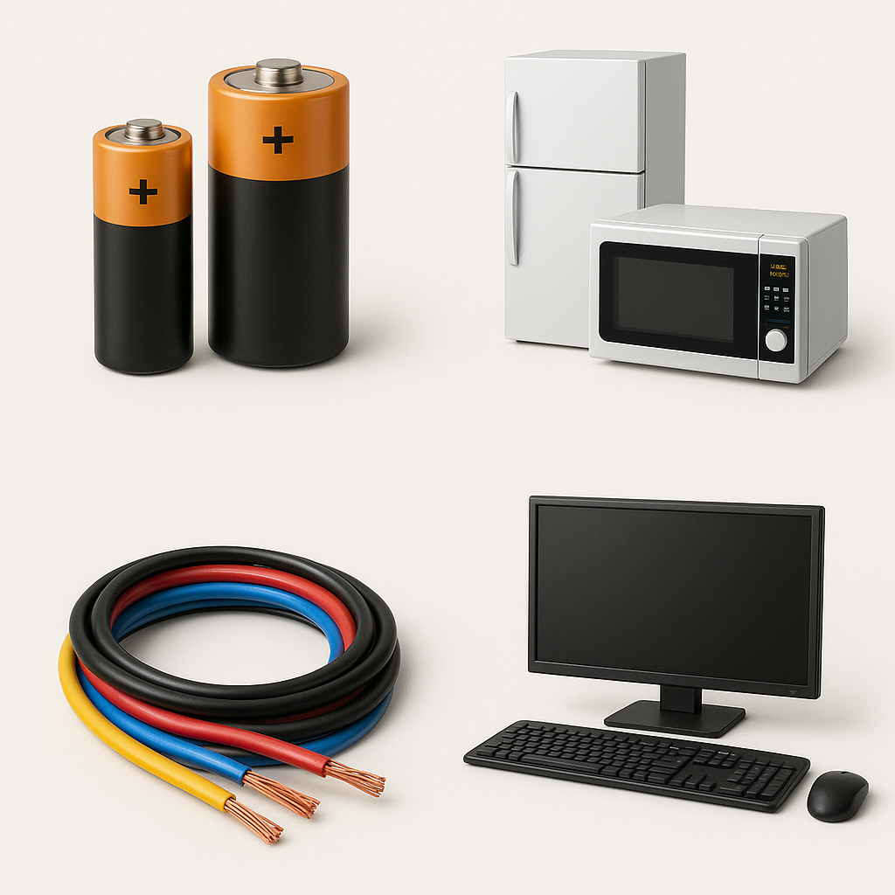
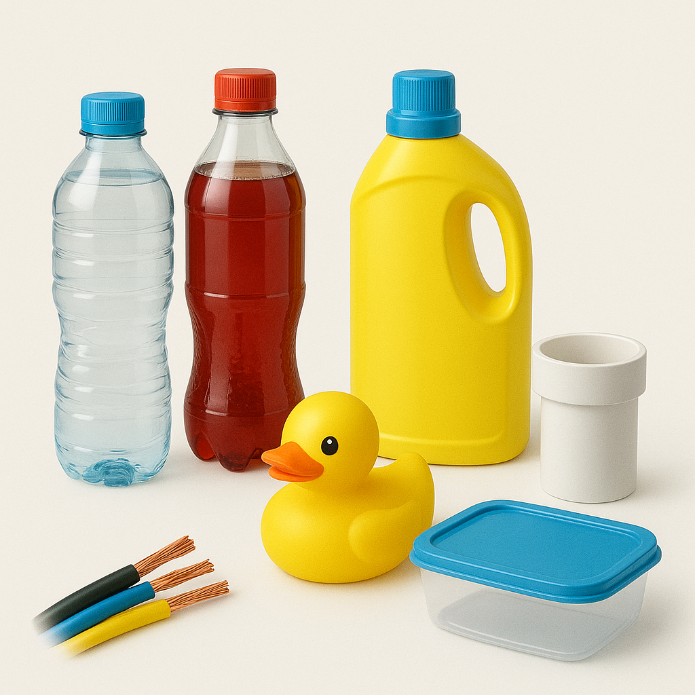

Metal
As sucatas metálicas compreendem uma ampla variedade de
materiais, como alumínio, cobre, ferro, aço inoxidável e latão.
Dentre os exemplos de objetos temos: latinhas de comida e bebida, juntas de canos, canos, pregos e parafusos, fios de cobre desencapados e algumas peças de veículo. E alguns exemplos que não são reciclados: latas de aerossóis, lata de tinta, pilhas e baterias, clipes e grampos, e esponjas de aço.
Dentre os exemplos de objetos temos: latinhas de comida e bebida, juntas de canos, canos, pregos e parafusos, fios de cobre desencapados e algumas peças de veículo. E alguns exemplos que não são reciclados: latas de aerossóis, lata de tinta, pilhas e baterias, clipes e grampos, e esponjas de aço.
Eletrônica
Sucatas eletrônicas são compostas por placas de circuito,
fios e componentes retirados de dispositivos eletrônicos descartados.
Possuem metais preciosos como ouro e prata, além de materiais recuperáveis
como cobre e alumínio.
Dentre os exemplos de objetos temos: todos os aparelhos que ligam à tomada ou usam pilhas e baterias, como telemóveis, computadores, televisores, frigoríficos, micro-ondas, fios, cabos, e outros acessórios eletrónicos

Dentre os exemplos de objetos temos: todos os aparelhos que ligam à tomada ou usam pilhas e baterias, como telemóveis, computadores, televisores, frigoríficos, micro-ondas, fios, cabos, e outros acessórios eletrónicos
Plásticos
Plásticos como PET e ABS são amplamente usados em embalagens,
eletrônicos e eletrodomésticos. O PET é comumente utilizado em garrafas de
bebidas e embalagens de alimentos. O ABS é encontrado em peças automotivas e eletrônicos.
Dentre os exemplos de objetos temos: garrafas de água e refrigerante (PET), frascos de produtos de limpeza, sacos plásticos, tampas de garrafas e frascos, potes de iogurte, embalagens de produtos cosméticos e medicamentos, baldes, brinquedos, lixeiras, Tupperware e alguns tipos de utensílios de cozinha, e PVC. E alguns exemplos que não são reciclados: espumas, esponjas de cozinha, isopor, acoplamentos metálicos, cabos de panelas e tomadas.

Dentre os exemplos de objetos temos: garrafas de água e refrigerante (PET), frascos de produtos de limpeza, sacos plásticos, tampas de garrafas e frascos, potes de iogurte, embalagens de produtos cosméticos e medicamentos, baldes, brinquedos, lixeiras, Tupperware e alguns tipos de utensílios de cozinha, e PVC. E alguns exemplos que não são reciclados: espumas, esponjas de cozinha, isopor, acoplamentos metálicos, cabos de panelas e tomadas.
Papel e Papelão
Papelão ondulado, papel branco e papel misto são componentes
comuns nesse grupo. Amplamente usados em embalagens, esses materiais têm uma demanda constante.
O papel e papelão devem ser descartados secos e limpos, sem restos de comida.

Dentre os exemplos de objetos temos: papel branco, jornais, revistas, cadernos, formulários de computador, fotocópias, rascunhos, envelopes e cartas, caixas de papelão, sacos de papel, cartazes e folhetos. E alguns exemplos que não são reciclados: papéis com resíduos de comida, papel celofane e papel vegetal, papéis encerados ou plastificados, papel carbono, fotografias e fitas adesivas, papéis metalizados, como embalagens de salgadinhos, papel higiênico, lenços de papel e guardanapos.
Dentre os exemplos de objetos temos: papel branco, jornais, revistas, cadernos, formulários de computador, fotocópias, rascunhos, envelopes e cartas, caixas de papelão, sacos de papel, cartazes e folhetos. E alguns exemplos que não são reciclados: papéis com resíduos de comida, papel celofane e papel vegetal, papéis encerados ou plastificados, papel carbono, fotografias e fitas adesivas, papéis metalizados, como embalagens de salgadinhos, papel higiênico, lenços de papel e guardanapos.